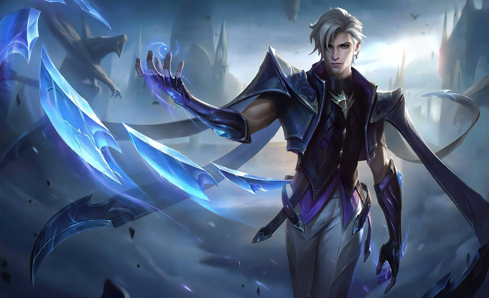

Experience with Aamon "Duke of Shards"
Aamon is a well-thought out hero. He has it all. He has invisiblity from his passive which acts as either an excape skill or an ambush skill. He can jungle decently in the early game which dramatically goes faster as he unlocks his skills and gets items. His 1st skill deals an absurd amount of damage in mid-late game. His 2nd skill is mostly used as a way to activate his passive and not as a damaging skill. His ult is very broken. Once you complete the 1st-basic attack combo and lowered the enemies hp to atleast 40%, one ult will finish off the enemies as long as they do not have magic defence items. His weakness is heroes that have both AoE and cc skill. Examples are Bane, Lapu-Lapu, Paquito, Chou, Ling, Hayabusa, etc.